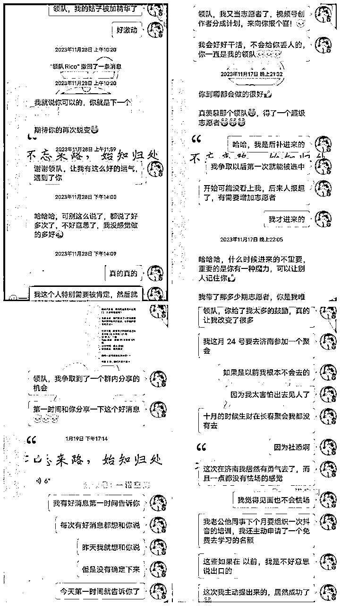
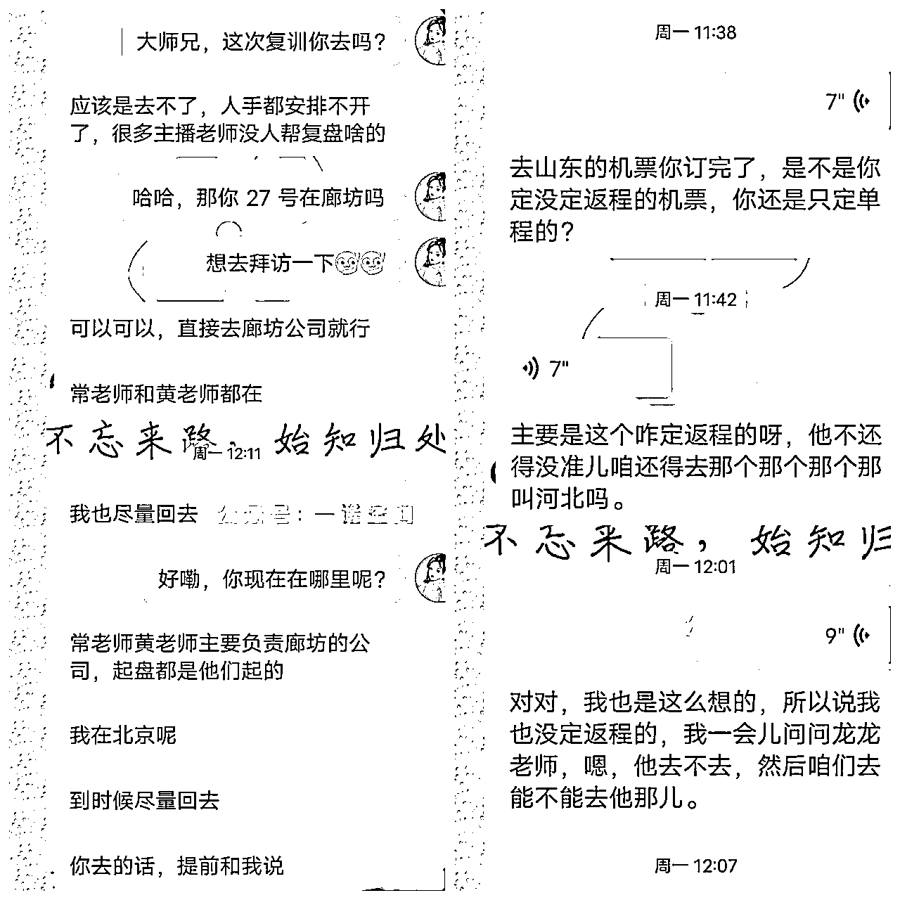
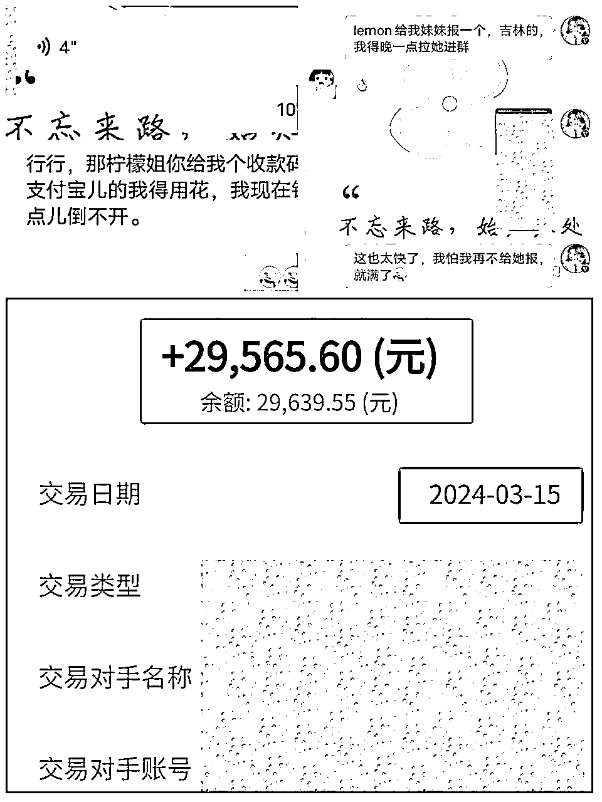
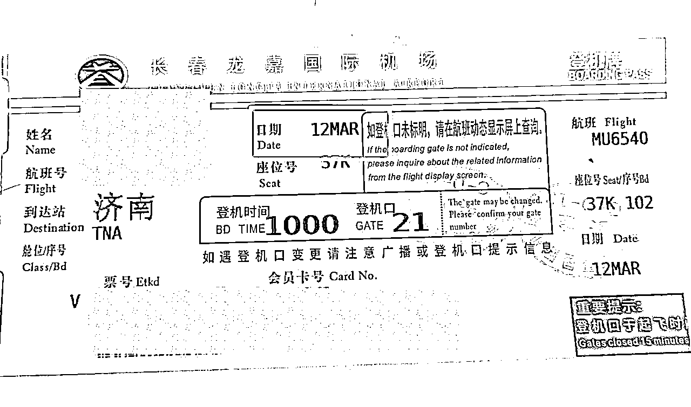
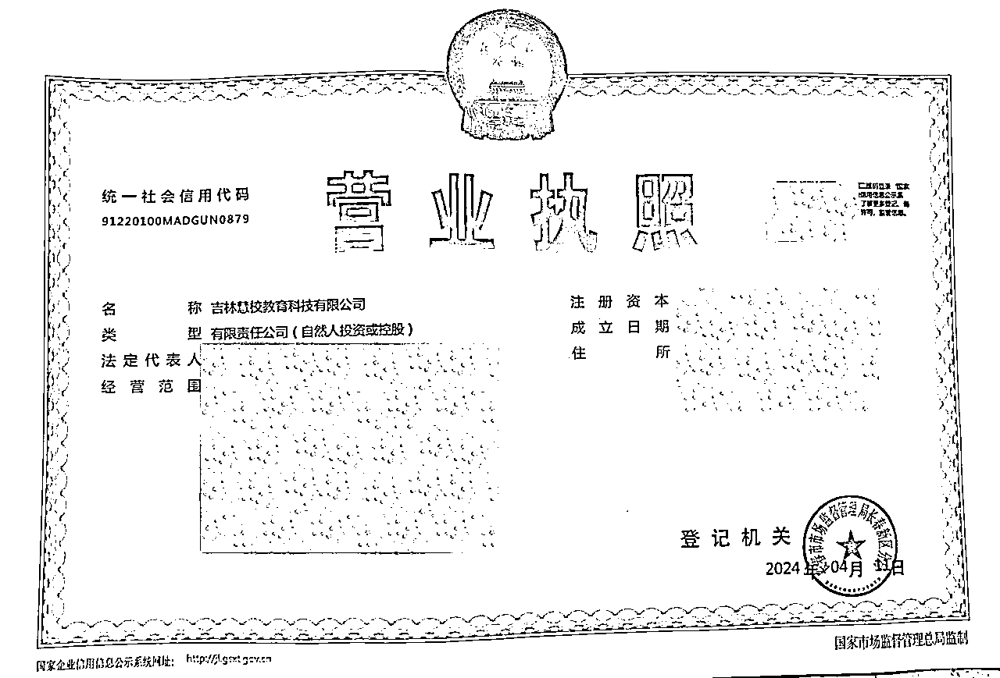
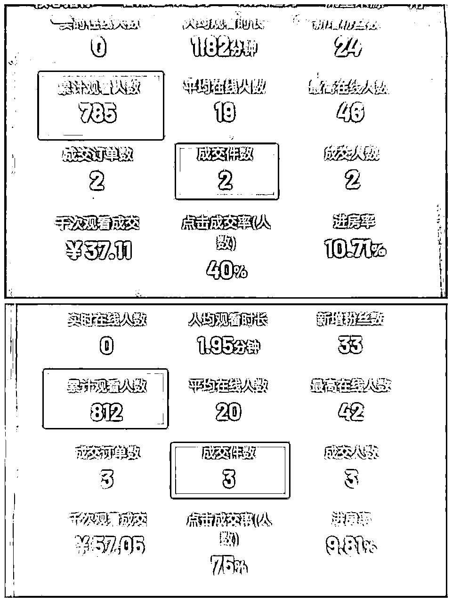
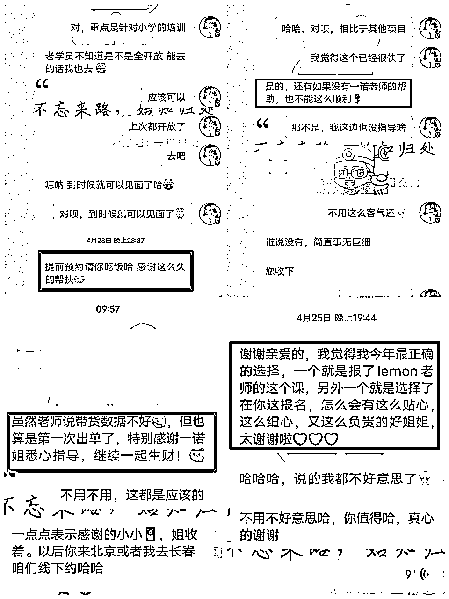
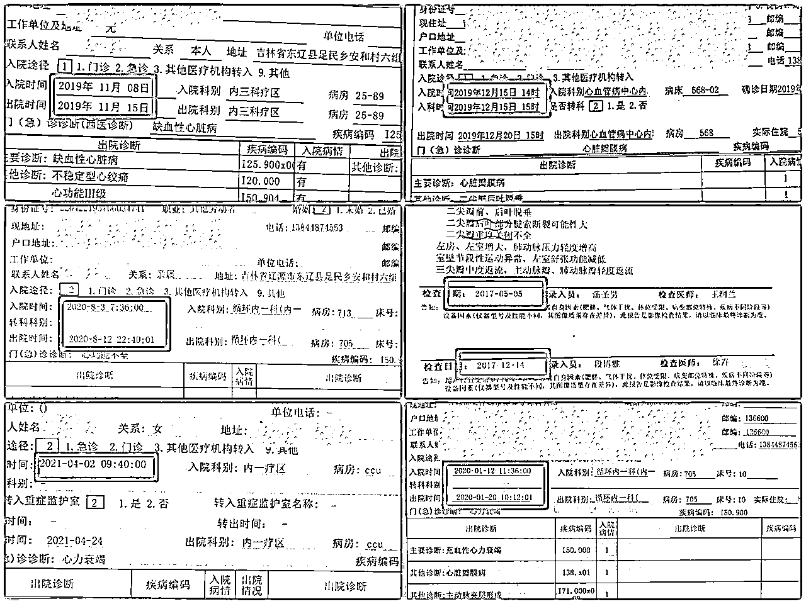
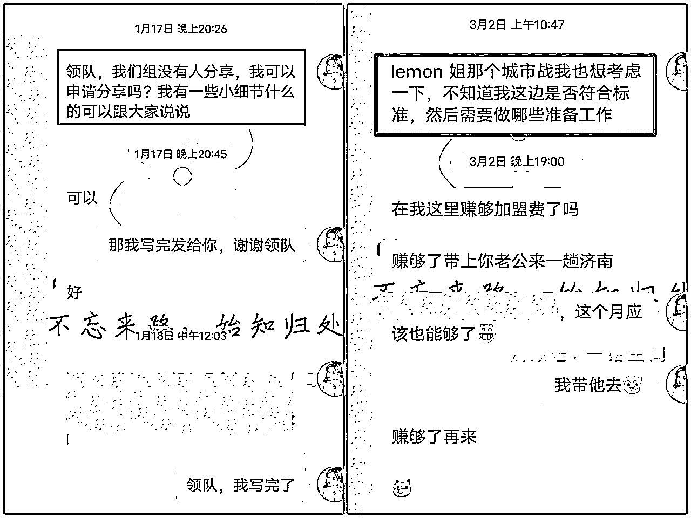
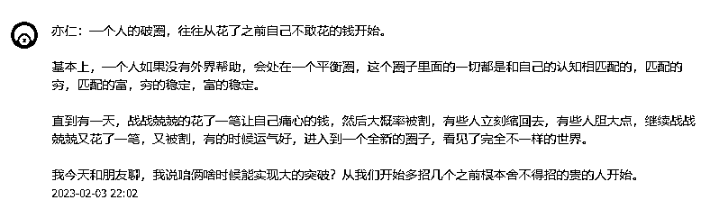

来源：https://hiac6nj36g5.feishu.cn/docx/OPswdqHMOou5ZSx58EqcE0E3nGS
生财的新老圈友们，大家好，我是生财有术第7期圈友一诺！来自吉林，加入生财一年。一年，经历了迷茫期、航海探索期、主动发声期、付费深耕航海项目期，最终扎根在了现在的领域——教育规划师，目前已从业近半年，稳定变现月入2万+，希望我今天这篇帖子能给生财新同学或者处于项目迷茫期的同学带来一些启发。
（同时本文也算给生财12月的抖音教育直播航海交的作业啦～）
想更充分了解项目和了解我的朋友，可以看一下往期的精华帖
航海志愿者之旅：
教育规划师航海：
关于教育规划师项目，生财航海手册写的已经无比详细了，我这里就不过多赘述了，想了解该项目的朋友也可以看我之前在生财发的贴子！
生财链接：https://t.zsxq.com/yxthG
飞书链接：
今天主要从我个人的视角写一下我的感受。全文主要分为以下几个板块：
1.前奏：我的成长碎碎念
2.逆风翻盘的几个重要时间节点
3.我做教育规划师的收获
4.教育行业未来前景
5.我的一点心得感悟
6.我要感谢的人
简述一下我的成长经历：1985年出生在一个东北的农村，自幼就患有先天性胯骨脱位病，3岁时父母离异了，7-8岁之间做了三次手术，2016年我妈妈又做了一次主动脉夹层手术，2019年妈妈又因为心衰+类风湿开始卧床（期间大大小小住院次数已经数不过来了），直到现在依然如此，2024年主业项目赔了10W+！
上边所有的经历看似并不那么完美，但是也正是因为这种种经历，让我养成了未雨绸缪的能力，在2013年药品市场还算景气的时候，毅然辞职做起了药品代理生意，2015年在房价开始上涨的时候买了房子，2020年在主业开始有下滑的苗头的时候，开始接触各种副业项目，可惜的是并没有及时止损，赔了10W+
2023年4月有幸加入生财有术，8月第一次做了航海志愿者开始，那时候还很自卑，幸亏有志愿者的身份做加持，有领队Rico的鼓励和认可以及所有船员的支持，我的命运的齿轮也就开始运转了，好运一步一步向我靠近，遇到教育规划师项目，开始彻底逆风翻盘了
我一直坚信：上帝在给你关上一扇门的同时，一定会给你打开一扇窗。希望我的经历可以给那些还在迷茫期的圈友点亮一束光。
因为自己之前是做网课代理的，所以对生财有术早有耳闻，但是对于2000多的学费还是有点望而却步，并且心里还有一种想法：几十元就能买到的内容，为什么要花2000多，觉得那些人可能脑子有问题。现在想想小丑竟是我自己。
生财有术的搜索路径非常方便，还设置了精华帖、风向标等板块。想搜索教育相关的内容，直接输入关键词，相关的帖子和风向标都一目了然，更加系统、方便。
不知道大家都什么样，我是那种拖延症很严重的人，但是责任心又比较强，好胜欲也很强，如果让我自己去做一个项目，我会拖拖拉拉的坐很久，甚至最后就不了了之了，跟着航海行动，有作业打卡，有教练带队，有志愿者督促，好胜欲瞬间被激发出来，整个21天的航海收获要比自己看帖子大得多
能否赚到钱，除了知识的积累，重要的还有信息差、资源差、人脉差。而这些是远远要大于知识储备的，并且只会在小众的圈子里边流行，生财有术的这些资源，至少要领先外部渠道6个月的时间，这6个月往往就是一个项目的红利期，后续加入的只能喝汤了，甚至只能当炮灰
作为新手小白，如果在生财外部找同行业的精英，可能是一件很麻烦的事，并且，我们没有办法判断消息的真伪，很容易被割韭菜，在生财里边所有的精华帖都是亦仁老板经过层层筛选，选择出来的，帮我们过滤掉了很多垃圾信息。并且想找到行业大佬也可以直接去问鱼丸。
那时候我开始疯狂的去看生财的精华帖。发现了很多做项目的共性，学习了很多技能，风向标更是能随时发现行业动向，也给我后来参加教育规划师项目打下了基础！
生财有术的志愿者之旅，是我突破自我的重要时间节点
去年8月生财航海，我报名视频号带货志愿者。因为身体的因素，还有各种琐事，让我变得很自卑，线上交流还可以，但是特别害怕线下见面。去年长春生财圈友组织了一次线下见面会，那次就因为自卑，看到消息后，一直在是否报名之间犹豫了很久，最终还是放弃了。
在做志愿者之后，凭着东北人的热情和真诚，得到了领队和船员的认可，最终被评为了A+志愿者。这种被很多大佬，很多优秀的创业者肯定和需要的感觉，给我带来了莫大的鼓励。
这种感觉用语言表达会显得很苍白，但是却真真切切的给我带来了改变，信心的建立有时候往往只需要被肯定，被需要，这次志愿者之旅，让我后来有勇气参加了lemon教练在济南组织的线下培训。
真心的建议大家去做一次航海志愿者，21天的成长是显而易见的！生财有术不会辜负每一个努力的人，你的付出一定会被看到，并且能得到认可。最主要的是自己心态的变化和成长。

都说线上聊千遍不如线下见一面，去年年底，因为这一年的各种发声，我终于鼓起勇气参加了lemon教练在济南的线下课。
我的主业是做药品代理的，从厂家代理产品，批发给医药公司，主要的沟通模式就是传统的电话销售，不用跑终端市场，也不用去拜见客户，唯一和客户接触的机会只有每年一两次的药交会，能见到的客户也是屈指可数。
副业项目也一直停留在线上，最开始做的网课代理，只是在公众号做最基本的引流，然后微信成交，做闲鱼也是线上交流，总之，从来没有做线下见面的体验。
见面之后，你会发现所有的自卑和恐惧都是自己给自己设置的枷锁，在生财的圈子，在搞钱的圈子里边所有人的目标都很明确：就是搞钱。来到线下，看到有真实的直播画面，真实的成交记录，一群人都在聊搞钱，确实有被震撼到。
虽然，那时候虽然我还只是一个小透明，但是从来没有感觉到被排斥。几天下来，和这些人的关系变得更加默契。以前的我性格比较自卑，比较孤僻，基本没有什么社交，圈子几乎已经被锁定了。通过聚会结识了很多朋友，可以约着一起出行，一起约饭，一起探讨直播的卡点，还可以线下交流学习。

因为去年主业赔了10w+，我其实对自己做项目都没有抱有太大的希望了，只是希望能比打工挣得多一点就行，我已经38岁了，现在打工想跨个行业是比较难的，而以前的药品招商的工作虽然是轻车熟路，但是由于整个行业都不景气，平均工资只有3000多，完全承担不了我的开销。
做教育规划师第二个月（3月15日发的是2月的工资，我是12月25日开始起号的）就能达到月入2W+，当时真的太激动了。更加感叹信息差的重要性，感叹团队的重要性，在此之前完全没有想过能赚到这个数字。可能对于很多大佬来说并不算什么，但是我却激动的哭了一个晚上，所有的感慨都涌上来了，最难熬的日子我都挺过来了，这时候可能就是一种释放，压抑很久的情绪得到了释放。
还记得当初报教育规划师项目的时候，6999的学费我还是用的花呗，也是内心挣扎了很久才报名的，现在短短两个月的时间，就已经翻倍赚了回来。后来义无反顾的也给我妹妹报了名。
庆幸自己加入了生财有术，庆幸自己遇到了领队Rico，庆幸生财有术组织了教育规划师航海，庆幸自己遇到教育规划师这个项目，遇到lemon教练，也庆幸自己并没有放弃。

在线上销量趋于稳定后，我老公也辞职开始和我一起做起了教育规划师项目，我们都是正处于中年职业危机的年纪，他的工作也不是很稳定，公司还经常拖欠工资，有时候两三个月也不发工资。经过再三考虑之后，他也辞职了。
他的辞职也并不是脑门一热就盲目做出的决定，也是恰逢了天时地利人和。在这里不得不感慨lemon教练的眼光，我还停留在一个月挣2W+沾沾自喜的时候，lemon老师已经筹划开展城市站了。将每个省份作为一个城市站，布局到高考、中考、小升初、幼升小、中职等种种赛道。
当时，我们果断做出了要签城市站的决定，并且得到了lemon老师的认可和支持，所以三月份我们又去了一趟济南，签约了吉林省的城市站。对于城市站而言，我们的未来前景更加明朗了，除了有小课包的收入，后端转化的收入，包括地级市的后端转化都是走的加盟的路线，总部都是有收益的。

从济南回来以后,我们就开始马不停蹄干起来，四月我们在长春注册了自己的公司，前几天又租了办公室，打算大刀阔斧拼一把。

说实在的，人到中年，从来没有想过要二次创业，而且经历了上次的失败以后，我觉得自己并不是一个合格的创业者，目光比较短浅，优柔寡断，完全凭借一腔孤勇往前走，抗风险能力是非常弱的。
这次如果没有山东总部的支持，没有lemon教练的支持，我想我也没有勇气这么做，感恩遇见。人一辈子没有几次能改变命运的机会，当他一旦来了的时候一定要拼尽全力去抓住，庆幸的是，这次我抓住了。
关于经济事业的收入我在上边已经简单的描述了，人到中年还能开始一份属于自己的事业，这里非常感恩。
并且带领自己的妹妹开始了这项事业，我觉得也更有价值了。我妹妹在东北的一个小县城开药店，这几年也是市场经济不景气，她在加入教育规划师之前都不玩抖音，对飞书等软件更是一窍不通，性格又比较内向，小县城的工资更是少的可怜。
虽然她性格内向，直播能力非常一般，但是现在一天开两场直播，花费2个多小时的时间，每场能带货二三单，一天在县城里边挣个60*5=300元，已经很满足了，还能照顾药店的生意，照顾孩子，照顾老人。
以前我有困难的时候，都是她出手帮我，这次能帮到自己的家人，感觉非常的幸福。

人毕竟是社会动物，总是需要被认同，被肯定，被需要。我虽然做了很多项目，也认识了一些圈内人，但是一直都是一个默默无闻的小透明，直到航海志愿者，因为身份的加持，我找到了被需要的感觉，后来在教育规划师项目上也慢慢被大家熟知。
每次听到大家亲切的喊我一诺姐，能帮大家解决问题，我都由衷的感到开心。其实这一点，我没有什么见地，我遵循的只是主动、真诚、利他这几个原则。
以前我不敢表达自己的观点，害怕被别人笑话，害怕自己表达的观点在大佬看来是一个弱智的行为，后来才发现规矩都是自己给自己设定的。大家都很忙，没有人在乎你是否出丑，真正走不出来的只是自己。
大胆表达，真诚待人，利他主义，真的会有意想不到的收获。

都说贫贱夫妻百事哀，还说女人的情绪决定着一个家庭的气氛。我相信很多人应该都认同这个观点，我们往往把最好的情绪给了外人，把最差的情绪给了家人。可是，谁又想做一个情绪不稳定的怨妇呢？只不过是社会压力，经济压力多重压力并存的情况下，实在难有那么多好情绪，也就导致了家庭矛盾。归根结底，还是钱惹的祸。
做教育规划师之后，我明显的感觉到家庭氛围和谐了，一是因为每天忙着挣钱，哪有时间吵架，二是因为金钱可以 解决80%的烦恼。以前，我带我妈妈住院都是回县城医院，每次一万左右的花销，每年至少两次，着实有点吃不消，并且会怪自己为什么那么没用，不能带她去最好的医院。现在我就可以带她在长春的大医院看病了，作为女儿也会感到很安心。

在刚刚接触教育规划师这个项目的时候，除了小课包之外，我认为的变现方式只有高考报考指导师。四个月接触下来发现变现的方式简直太多了。
①前端变现小课包，单价19.9元，利润达到60+（对，你没有听错，是60+），场均销量10+，每场时间1-1.2个小时，如果每天直播2-3场，收益1200-1500/天
②前端/后端卖高考志愿卡，一单售价199-299，成本几十元，平均一单100+，根据引流人数而定销量，平均一场直播引流10多个人，一天引流30-50人，淡季转化率2-3单，旺季转化5-10单，收益200-100/天
③后端转化高考志愿填报，每人收费6000-8000
④后端转化海外留学……
①前端带货小课包，同高考小课包利润和销量基本一样，引流私域后端变现
②后端做中考志愿填报，我们这边收费99-199/人
③后端对接机构做初升高预高一课程，15天收费6999-8999/人
④后端对接私立高中，解决中考之后学生分流问题，替私立高中招生
①前端带货小课包，同高考小课包利润和销量基本一样，引流私域后端变现
②后端转化家庭教育指导课程
③后端报考指导，学区派位
④后端转化，与游学赛道合作
更多其他变现方式我还没有完全了解，不过能肯定的是这条赛道，未来一定大有可为
在互联网上混迹越久的人，可能越会有这种感觉，互联网项目更新的频次太快了，今天可能还是爆品，明天就要下架了，越是简单的事情，越是竞争白热化，看是忙忙碌碌一整天，看似赚到了一点钱，实则让人很不踏实。我相信这是很多互联网人的状态！
而做有知识壁垒的事情，做难而正确的事情，做可以持续深耕的项目，开始的时候可能需要一定的难度，这也无形当中筛选掉了很大一部分急功近利者，后期竞争也会越来越少，走的才会越来越远，越来越轻松。
在做网课代理的时候，开始只卖单课，一单只卖9.9，你会发现卖了50单，才能抵得过一个会员的利润，所以开始招会员，同样的时间，基本相同的服务，高利润才能赚的更多。在做闲鱼无货源电商的时候，低客单价和高客单价服务的时间基本一样，底层逻辑也一样，但是利润不一样。
同样都是工作一小时，当然要选择利润高的，这也是我选择教育规划师项目的核心。
身为互联网中的一员，我们对“割韭菜”这个词应该不陌生吧！看到大佬的晒图，看到大佬的收益，着实让人羡慕，一冲动就入手了！在一顿操作猛如虎之后，发现并没有取得理想中的收益，那为什么大佬能有收益呢？
除了客观存在的能力问题，还有一个问题就是项目本身就是这个特质，还有差异化竞争的内，就像我做教育规划师一样，开始的时候我也看到很多大主播播的***脚本，非要不信邪的去直播他们的脚本，后来被碾压的渣渣都不剩。像这种项目可能就不太适合我们小白去操作。就要打开差异化竞争。
除了项目本身的价值以外，所融入的圈子，团队核心人物的领头效应，管理模式等等这些事我再在加入生财有术之后了解到的最更加深刻的体会了其中的重要性，那么该如何把握这些呢？以一个新人的身份和大家聊聊我的感受。
作为一个东北人，真诚，热情是我的底色，在你一无所有的时候，可能这个就是你的幸运石，不要觉得大佬会嫌弃你笨，大佬看人的眼光是很准的，形形色色的人见多了，尔虞我诈也见多了，也更愿意提携那些值得培养的人。
也不要瞧不起那些不如你的人，同在一个圈子里，口碑都是自己积攒起来的，赠人玫瑰，手有余香就是这个道理吧。
以我的经验举例，如果我能再早几年加入生财有术，可能早就找到了适合自己的项目。凭心而论，我不是直播能力最好的，最多在团队中只能算中游水平，但是，因为早，有很多的时间去熟悉市场，去学习，去优化，所以才有机会去做城市站。
种一棵树最好的时间就是10年前，其次是当下，做项目最好的时间莫过于此时此刻！
项目是死的，人是活的！无论做什么项目，最终都是和人打交道，所以团队的核心人物和团队的理念很重要，身为一个没有资源，没有背景，项目也一般的人。遇到好的项目，好的机遇，一定要狠狠抓住。
比如生财有术的志愿者报名、教育规划师航海项目的群分享、教育规划师的报名、城市站的签约。每一次我都是挣扎了很久才敢说出口的，害怕被拒绝，害怕失败。虽然我也被拒绝过很多次，但是那又怎么样呢？至少争取过。

有句话说得好，你是谁并不重要，重要的是你和谁在一起。
现在回想起来我这几个月的进步，都觉得有点不可思议，以前的努力并不比今天逊色，为什么结果却相差甚远
可能因为以前一直是在外围努力，接触不到核心思想，自己就像一个工兵，再怎么努力都是一步一步向前移动
好的圈层，所能提供的资源是可以加持的，最重要的信息也只在小的圈层内流动
借用亦仁大佬的一段话共勉：

说了那么多，总结两个字：感恩！
感恩凌心带我加入生财有术，感恩生财有术给我们提供了这么好的平台，感恩lemon老师带我入圈，并且给了我那么多机会！
也对所有生财圈友说一句话：找到适合的项目，持续深耕，定能拿到结果，加油💪